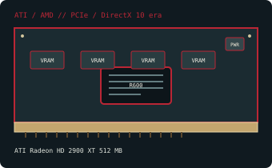

[ PCI EXPRESS GRAPHICS // IDENTIFIED COMPONENT ]
ATI Radeon HD 2900 XT 512 MB
R600, 2007. This record identifies the listed retail model/configuration; board-partner variations are called out separately.

MODEL / VARIANT: 512 MB GDDR3 retail/reference Radeon HD 2900 XT, distinct from later HD 2900 Pro/GT and partner variants.
Recorded specifications
| Cataloged product | ATI Radeon HD 2900 XT 512 MB |
|---|---|
| GPU / architecture / launch | R600; 2007. |
| Core & memory | R600 GPU with 320 stream processors; 512 MB GDDR3 on a 512-bit bus; reference 743 MHz GPU and 825 MHz memory clock (1.65 GT/s effective). |
| Host interface & power | PCI Express 2.0 x16; reference card uses one 6-pin and one 8-pin PCIe auxiliary power connector. 215 W reference board power class; provide both specified PCIe power leads and adequate PSU capacity. Partner boards may differ. |
| Typical reference outputs | Reference panel: dual-link DVI outputs and video-in/video-out (TV) connectivity; check the actual bracket and supplied adapters. |
| Board dimensions | Reference ATI/AMD board length is approximately 241 mm; partner/OEM cooler height and thickness vary. Verify the exact board drawing and slot clearance before installation. |
| Variant boundary | 512 MB GDDR3 retail/reference Radeon HD 2900 XT, distinct from later HD 2900 Pro/GT and partner variants. |
Compatibility, service & archival notes
Use a PCIe x16 slot; an older PCIe host normally negotiates a compatible link generation, but motherboard firmware and OS support still matter. Confirm both auxiliary leads and case clearance—the reference cooler is long, hot and exhaust-oriented. The dual-DVI/VIVO output panel and its adapters are card-revision dependent.
- Check the exact slot keying/signaling, board dimensions, auxiliary-power pinout, PSU guidance, airflow and display outputs for the specimen; connector appearance alone does not establish compatibility.
- Install a driver supporting the recorded device ID and target OS. Preserve the original driver and firmware versions before making changes.
- Record board partner, PCB and cooler revision, device/subsystem IDs, BIOS, adapter set and physical condition. Do not power a card with damage, corrosion, obstructed cooling or suspected shorts.
Manufacturer, model & standards sources
- ATI Radeon HD 2900 XT 512 MB specifications — TechPowerUp GPU DatabaseIndependent model-level GPU, memory and interface reference; board revisions may vary.
- AMD legacy graphics drivers and support archiveManufacturer driver-support reference; select the product family, device ID and operating system that match the card.
- PCI-SIG PCI Express specificationsPCI Express interface standard; physical x16 fit does not alone establish power or firmware compatibility.
- AMD product support and driver selectionAMD manufacturer support reference for identifying a compatible driver branch and operating system; availability depends on product age.
GPU-family references do not supersede the card manufacturer’s manual, nameplate or board revision for a specific specimen.